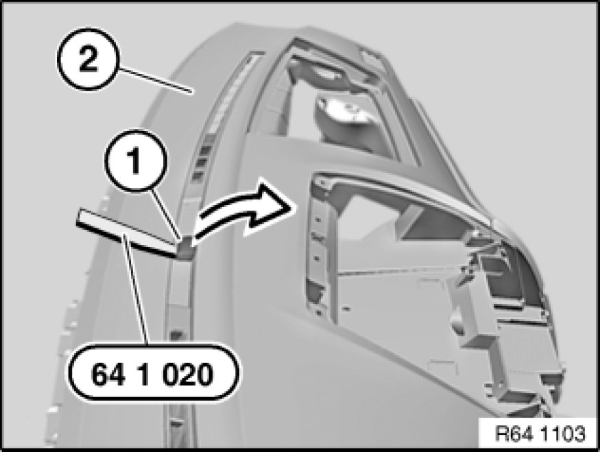

Solar Sensor: Service and Repair
64 11 992 - Removing and installing/replacing solar sensor

Special tools required:
- 64 1 020 64 1 020 Release Hook

Necessary preliminary tasks:
- Remove instrument panel trim 51 45 030 Removing and Installing Instrument Panel Trim

Lever out solar sensor (1) with special tool 64 1 020 64 1 020 Release Hook in direction of arrow.
Feed wiring harness of solar sensor (1) out of retainers of instrument panel trim (2).
Remove solar sensor (1) from instrument panel trim (2).